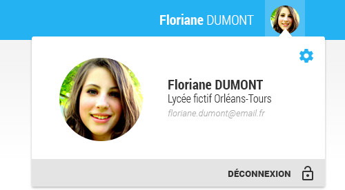

L'accès à l'espace compte utilisateur ENT se fait soit depuis l'avatar de l'utilisateur dans le bandeau du portail ENT, en cliquant sur le bouton settings:
soit depuis le menu menu de l'ENT, en cliquant sur le bouton settings et en choisissant "Mon compte ENT" :